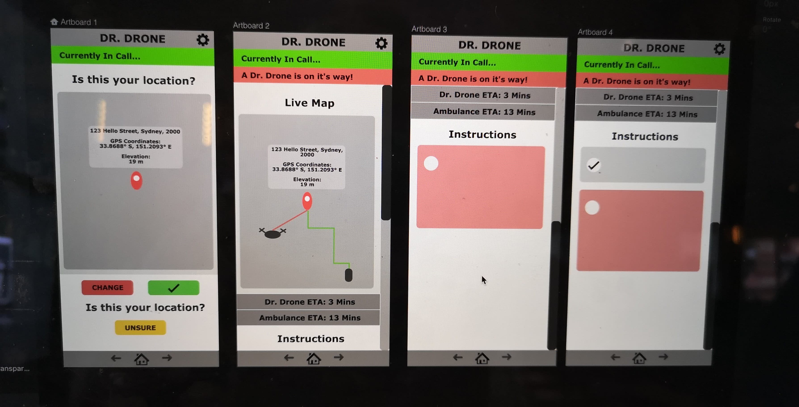

Three University of Sydney students, Josh, Victoria and I, have made a team named "Untitled". For our project, our aim was "To improve and enhance the future streamline of paramedics services" and to make sure it is faster, safer and better.
This was because we could see many potentials that could be improved as according to our background research, many patients and paramedics both face uneasy situations in using the emergency services today, no matter how developed the technology is.
HOW DR.DRONE SOLVES THE PROBLEM
Dr.Drone provide two services:Medical advice is used when people want to search up symptoms and solutions of minor injuries or pain, such as stomach ache. Today, many people use online to search up their pain points and "guess" what the problem could be. Dr.Drone's Medical Advice will provide clearer and easier possibilities and solutions, which the articles will also be written by qualified doctors so that people can have more trust. The emergency call system is for people who have major accidents or injuries, which a Dr.Drone will be sent for first aid before the paramedics arrive. Patients will get a live-map view of where the drone and ambulance is, and be given instructions to follow for either treating someone else or themselves while waiting for the paramedics.
PROCESS IN BUILDING DR.DRONE
We carried out background and user research to get to know about the paramedics field and the user's needs. Interviews, surverys and secondary research was used to gain as much information as possible, as this was the most important and fundamental stage to consider when building up with concepts. After we got our base knowledge from the researches and chose to build up Dr.Drone, we continued on with our project by sketching and further ideation.
To view our concept in real-life situation, we used storyboarding as one of our method to get an idea of how the concept will work.
Short video of all the design processes:
MAIN DESIGN DECISIONS
The original design of the High fidelity prototype of Dr.Drone application was based on an Android template.
However, we pivoted to an iOS structure as participants from the user testing preferred the iOS interface due to reasons of how the app interface is too complicated. After switching the base, it was easier for us to continue building up the app, and the users also found it easy to explore the app. The swipes, location of buttons and hierarchy of the app has positively changed from this decision.

DESIGN REFLECTION
It was a special experience and opportunity designing Dr.Drone, especially with great teammates, as we all overcome the hardships together and have come up with the solution of Dr.Drone for better streamlining in the paramedics field. It has definitely upgraded my skills for ideation, exploration, user testing and pivoting ideas in certain situations which I needed improvement with. Overall, I am proud of what our group have designed and we beleive this can be the future of the paramedics streamlining services.